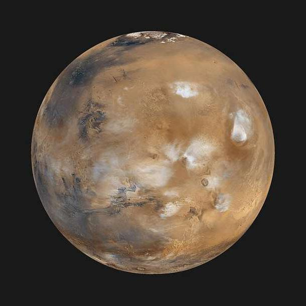

نظرة عامة
المريخ هو الكوكب الرابع من الشمس والمعروف باسم "الكوكب الأحمر" بسبب لونه الناتج عن أكسيد الحديد على سطحه. يُعتقد أنه كان يحتوي على ماء في الماضي.
خصائص المريخ
- القطر: حوالي 6,779 كم
- مدة اليوم: حوالي 24.6 ساعة
- مدة السنة: حوالي 687 يومًا أرضيًا
- درجة الحرارة: تتراوح بين -140 إلى 20 درجة مئوية
معرض الصور
صورة لكوكب المريخ تظهر سطحه الجاف والتضاريس الحمراء.